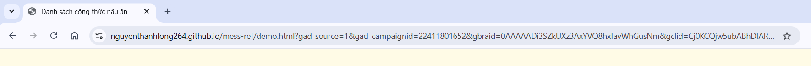

Hướng dẫn tạo link chat Messenger có kèm ref
🯠Mục tiêu
Tạo link chuyển sang cá»a sổ trò chuyện Messenger và gá»i kèm tham số ref là URL hiện tại để theo dõi nguồn gốc người dùng.
⚙️ Cách là m
Chúng ta sẽ dùng trực tiếp link Messenger theo định dạng:
https://m.me/username?ref=tham-so
📌 Các bước thực hiện
🔹 Bước 1: Tạo Fanpage và lấy link m.me
Bạn có thể tạo link Messenger bằng một trong hai cách sau:
- Dùng username: Và o phần "Giới thiệu" của fanpage để lấy username. Link có
dạng:
https://m.me/yourpage - Dùng Page ID (messenger ID): Nếu fanpage không có username, bạn có thể dùng ID của fanpage.
Link có dạng:
https://m.me/123456789012345
(thay123456789012345bằng ID tháºt của trang)
🔹 Bước 2: Cà i đặt Định tuyến cuộc trò chuyện trên Messenger
Trong phần cà i đặt của fanpage, và o Thiết láºp trang → tìm Định tuyến cuộc trò chuyện trên Messenger và chá»n Ứng dụng định tuyến mặc định.
🔹 Bước 3: Tạo nút chat và gắn ref theo URL
Để sá» dụng link m.me, bạn cần tạo một thẻ <a> có dạng:
<a href="https://m.me/{pageID hoặc username}">Nhắn tin qua Messenger</a>Nếu muốn gá»i kèm tham số ref là đưá»ng dẫn hiện tại và lá»c ra các thông số chứa
source,campaign (giúp theo dõi người dùng đến từ trang nà o),
bạn có thể dùng và dụ sau:
<a id="messenger-chat-link" href="#" target="_blank" style="position: fixed; bottom: 20px; right: 20px; z-index: 9999;
width: 60px; height: 60px; background-color: #008080;
border-radius: 50%; display: flex; justify-content: center;
align-items: center; box-shadow: 0 4px 8px rgba(0,0,0,0.3);">
<img src="https://upload.wikimedia.org/wikipedia/commons/b/be/Facebook_Messenger_logo_2020.svg"
alt="Messenger Chat" width="30" height="30" />
</a>
<script>
window.addEventListener('DOMContentLoaded', function () {
const chatLink = document.getElementById('messenger-chat-link');
const fullUrl = new URL(window.location.href);
const baseUrl = fullUrl.origin + fullUrl.pathname;
const params = new URLSearchParams(fullUrl.search);
const filteredParams = new URLSearchParams();
for (const [key, value] of params.entries()) {
if (key.includes('source') || key.includes('campaign')) {
filteredParams.append(key, value);
}
}
const filteredUrl = filteredParams.toString()
? `${baseUrl}?${filteredParams.toString()}`
: baseUrl;
const encodedRef = encodeURIComponent(filteredUrl);
const link_me_ID = '597543350116055';
chatLink.href = `https://m.me/${link_me_ID}?ref=${encodedRef}`;
});
</script>🔠Và dụ: Nếu người dùng truy cáºp và o đường dẫn sau:
https://nguyenthanhlong264.github.io/mess-ref/demo.html?gad_source=1&gad_campaignid=22411801652&gbraid=0AAAAADi3SZkUXz3AxYVQ8hxfavWhGusNm&gclid=Cj0KCQjw5ubABhDIARIsAHMighbIC8zO11LM2CLIOs3WMb66qV7Sn3sCbASHMUmHoywnGCpGmXpJ_xoaAkfuEALw_wcBThì sau khi xỠlý, ref sẽ được tạo ra như sau:
https://m.me/597543350116055?ref=https%3A%2F%2Fnguyenthanhlong264.github.io%2Fmess-ref%2Fdemo.html%3Fgad_source%3D1%26gad_campaignid%3D22411801652➡️ Tức là chỉ những tham số chứa source hoặc campaign mới được giữ lại để gá»i sang
Messenger, giúp bạn dễ dà ng theo dõi hiệu quả chiến dịch quảng cáo.
✅ Khi người dùng nhấn và o nút, há» sẽ được chuyển đến Messenger với ref là đưá»ng dẫn hiện tại đã rút
gọn,
chỉ giữ lại các thông số quan trá»ng như source và campaign.
📷 Và dụ minh há»a
Dưới đây là và dụ 1 trang hiển thị nút chat Messenger cố định góc dưới bên phải trang:
Tôi đã điá»n thêm các thông số như utm_source, utm_campaign trong đường dẫn:
Sau khi ấn và o link (trường hợp nà y là bong bóng chat như ảnh 1), thì sẽ được dẫn qua messenger chat với chỉ số ref:

Sau khi người dùng ấn nút Bắt đầu thì ref sẽ được truyá»n và o app.
Xem trang và dụ